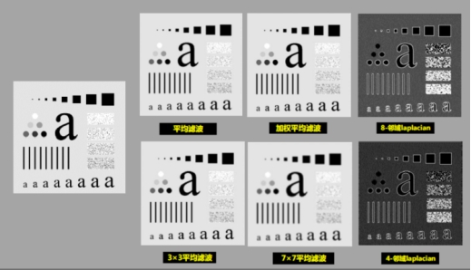
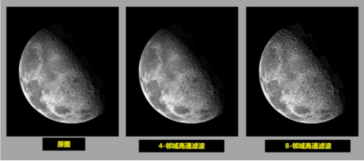
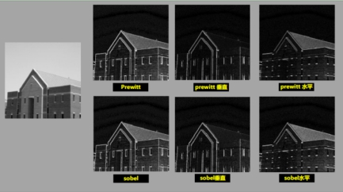
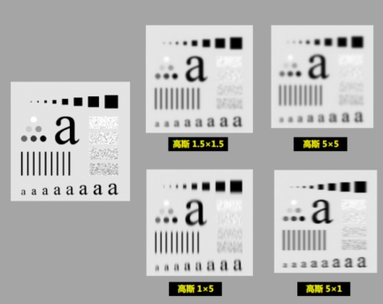
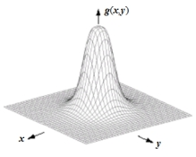
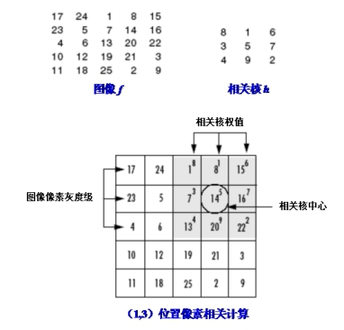
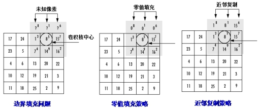
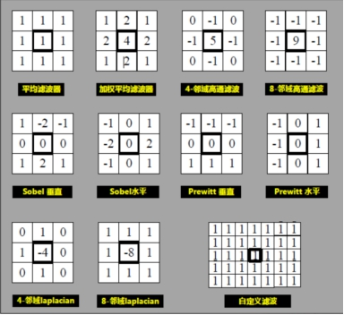

Công cụ lọc không gian hình ảnh chủ yếu được dùng để thực hiện các thao tác lọc trên ảnh đầu vào, nhằm mục đích tăng cường ảnh, làm nổi bật thông tin quan tâm và triệt tiêu nhiễu. Các thao tác lọc được hỗ trợ gồm: lọc thông thấp (bộ lọc trung bình và bộ lọc trung bình có trọng số), lọc thông cao (lọc thông cao lân cận 4 điểm và 8 điểm), phát hiện biên bậc một (toán tử Prewitt và toán tử Sobel), phát hiện biên bậc hai (toán tử Laplacian lân cận 4 điểm và 8 điểm), lọc Gauss, lọc trung bình nhanh (kích thước bộ lọc tối đa hỗ trợ là 9x9).




| Phân loại | Tên tham số | Mô tả tham số |
|---|---|---|
| Cửa sổ thuộc tính | Loại bộ lọc |
Lọc thông thấp (bộ lọc trung bình và bộ lọc trung bình trọng số), lọc thông cao (lọc thông cao lân cận 4 điểm và 8 điểm), phát hiện biên bậc một (toán tử Prewitt và Sobel), phát hiện biên bậc hai (toán tử Laplacian lân cận 4 điểm và 8 điểm), lọc Gauss, lọc trung bình nhanh. |
| Hệ số thu phóng biên độ Sobel | Dùng cho lọc Sobel. Nó quyết định phạm vi biên độ; hệ số càng lớn, phạm vi càng lớn, nhưng các giá trị biên độ vượt quá 255 sẽ bị cắt ngưỡng. | |
| Độ lệch chuẩn ngang | Độ lệch chuẩn theo chiều ngang của lọc Gauss. | |
| Độ lệch chuẩn dọc | Độ lệch chuẩn theo chiều dọc của lọc Gauss. | |
| Lọc toàn ảnh | Có lọc toàn bộ hình ảnh hay không. Khi chọn loại bộ lọc là lọc trung bình nhanh, thuộc tính này sẽ xuất hiện. | |
| Số dòng cửa sổ lọc m | Số dòng của cửa sổ tích chập của bộ lọc. | |
| Số cột cửa sổ lọc n | Số cột của cửa sổ tích chập của bộ lọc. | |
| Bật tính toán song song | Có bật tính toán song song hay không. Chọn “Có” sẽ kích hoạt tính toán song song OpenMP, giúp tăng tốc độ xử lý nhưng có thể khiến thời gian xử lý không ổn định. Chọn “Không” sẽ tắt OpenMP. | |
| Tỷ lệ phần trăm luồng | Thiết lập tỷ lệ phần trăm luồng dùng cho tính toán song song, phạm vi hợp lệ là (0, 0.75], tương ứng (0%, 75%]. | |
| Cửa sổ hình ảnh | Khung chọn GUI | Dùng để chọn vùng quan tâm. |
| Ảnh đầu vào | Ảnh đầu vào được công cụ lấy từ chuỗi dữ liệu. | |
| Chuỗi dữ liệu | Ảnh đầu vào | Ảnh cần thực hiện lọc không gian, giống với tham số ảnh đầu vào ở cửa sổ hình ảnh. |
| Biến đổi tuyến tính 2D | Dùng cho phép biến đổi tuyến tính hai chiều để phóng to hoặc tịnh tiến ảnh. | |
| Giao diện nâng cao | Không | Không |
| Phân loại | Tên tham số | Mô tả tham số |
|---|---|---|
| Cửa sổ giám sát | Ảnh đầu vào | Kích thước và số pixel của ảnh. |
| Ảnh đầu ra | Kích thước và số pixel của ảnh. | |
| Kết quả thực thi | Kết quả thực thi của công cụ. | |
| Thời gian thực thi | Thời gian công cụ thực thi. | |
| Cửa sổ hình ảnh | Ảnh đầu ra | Kết quả sau khi thực hiện lọc không gian, giống với tham số ảnh đầu ra trong cửa sổ giám sát. |
| Kết quả thực thi | Hiển thị kết quả thực thi của công cụ: khi thành công hiển thị “OK”, khi thất bại hiển thị “NG”, giống với tham số kết quả thực thi ở cửa sổ giám sát. | |
| Chuỗi dữ liệu | Ảnh đầu vào | Ảnh nguồn cần lọc, giống với tham số ảnh đầu vào trong cửa sổ giám sát. |
| Ảnh đầu ra | Ảnh đích sau khi lọc, giống với tham số ảnh đầu ra trong cửa sổ giám sát. |
Bộ lọc thông thấp còn được gọi là bộ lọc làm mịn. Nó có thể làm suy yếu hoặc loại bỏ tín hiệu tần số cao trong ảnh mà không ảnh hưởng đến tín hiệu tần số thấp, từ đó giúp giảm nhiễu — vốn thường là thông tin tần số cao.
Bộ lọc thông cao còn được gọi là bộ lọc làm sắc. Nó giúp tăng cường thông tin tần số cao của ảnh, tức là làm nổi bật các đặc trưng đường biên.
Bộ phát hiện biên bậc một là một dạng xấp xỉ rời rạc của gradient hai chiều (2-D gradient).
Bộ phát hiện biên bậc hai thường dùng toán tử Laplacian, là mô tả rời rạc của toán tử Laplacian liên tục.
Biểu thức toán học của bộ lọc Gaussian 1-D với giá trị trung bình bằng 0 là trong đó là tham số điều khiển độ rộng của Gaussian.
Bộ lọc Gaussian 2-D với giá trị trung bình bằng 0 là . Bộ lọc này được minh họa trong Hình 5.

Tích chập là một phép toán trên vùng lân cận, trong đó giá trị đầu ra của mỗi điểm ảnh là tổng có trọng số của các điểm ảnh trong vùng lân cận. Lọc tuyến tính của ảnh được thực hiện bằng phép tích chập (convolution). Ma trận trọng số được gọi là nhân tích chập (convolution kernel), hay còn gọi là bộ lọc.
Tương quan (correlation) rất giống với tích chập, khi giá trị đầu ra cũng là tổng có trọng số của các điểm ảnh lân cận. Điểm khác biệt là trong tương quan, nhân không bị xoay 180 độ trước khi tính toán, và được gọi là nhân tương quan.
Nguyên lý tính toán được minh họa như hình dưới (tâm nhân tương quan trùng với điểm ảnh (1,3) của ảnh, các trọng số nhân với giá trị xám tương ứng rồi cộng lại, kết quả bằng 585).

Trong tích chập ảnh, nếu kích thước nhân là n x n, khi khoảng cách từ tâm nhân đến biên ảnh nhỏ hơn (n - 1) / 2 thì một phần trọng số của nhân sẽ tương ứng với các điểm ảnh nằm ngoài vùng ảnh, như Hình 7. Các phương pháp đệm biên thường dùng gồm: (1) Đệm bằng 0: thay các điểm ảnh ngoài biên bằng 0. (2) Sao chép điểm ảnh lân cận: sao chép giá trị xám của điểm ảnh ở sát biên. Trong công cụ lọc ảnh, mặc định dùng phương pháp sao chép điểm ảnh biên.

Các bộ lọc thông dụng đều được biểu diễn dưới dạng nhân tương quan. Nhân tương quan (ma trận trọng số) tương ứng của từng loại bộ lọc được minh họa trong hình sau:

Không có
参见“\Samples\空间滤波工具.gvp”。